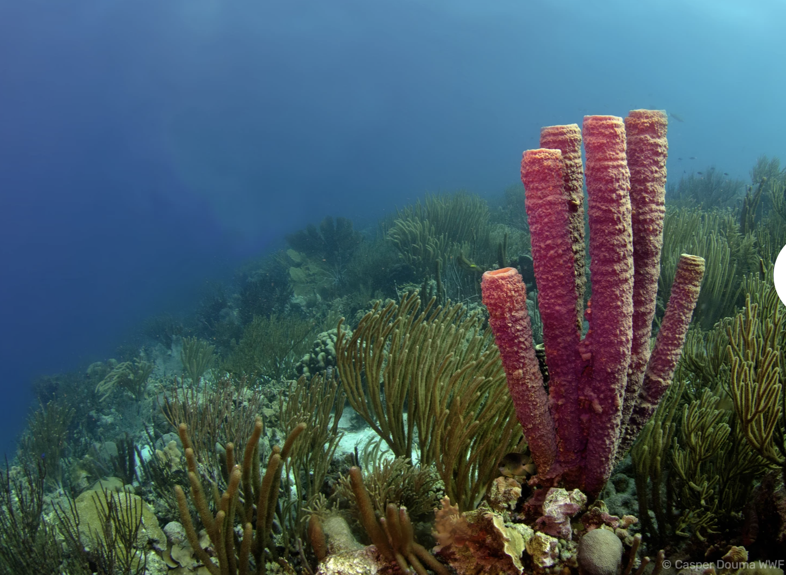

Support These Charitable Causes:
Greenpeace

"clean up your mess, Shell" written on an abandoned Shell oil rig in the North Sea.(Image credit: Greenpeace)
Greenpeace is an activist organisation that advocates for change in policy surrounding the environment. They achieve this by lobbying against companies that are not environmentally friendly and supporting companies that are. They also engage in direct action to protest against these companies. Greenpeace is an important organisation for advocating the protection of the environment, and you should consider supporting them through donations or volunteering.
World Wildlife Fund

A coral reef(Image credit: Casper Douma WWF)
The World Wildlife Fund is a global organisation which aims to protect wildlife and nature from humanity’s environmental footprint. Their mission statement is: “to build a future in which people live in harmony with nature.” In order to achieve their mission, they do extensive research on wildlife and their habitats, conditions and environments to assist in the conservation of endangered species. They also manage wildlife reserves on land which otherwise may have been used for industry. If you are interested in protecting wildlife and the world’s biodiversity, consider donating or volunteering to the World Wildlife Fund.
UNICEF Climate

Mariyam, 20, holds a climate action sign while standing on the beach in Maldives.(Image credit: UNICEF)
UNICEF is an international organization that primarily focuses on the protection of children, including the heightened impact of climate change to children. They raise awareness on the impact of climate change on children through publicly accessible information campaigns such as informational videos and television advertisements. They also have a large network of volunteer task forces which assist in climate disaster relief globally. If their mission seems important to you, you can help them through donations or by volunteering.
Website by Ryoma Fischer, Student Y13 CAS. 150433@ishweb.nl